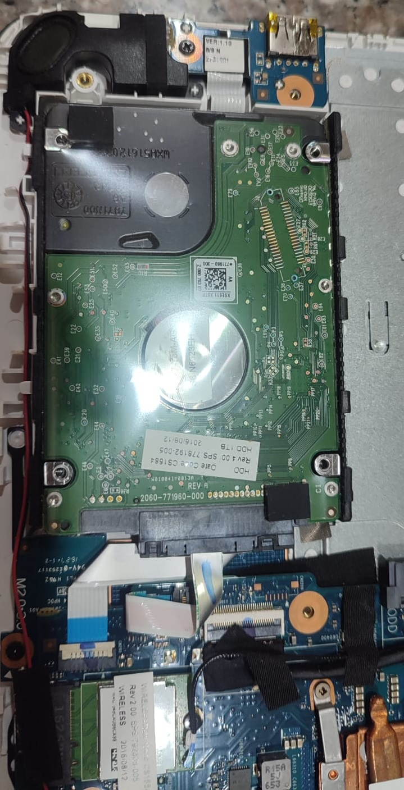
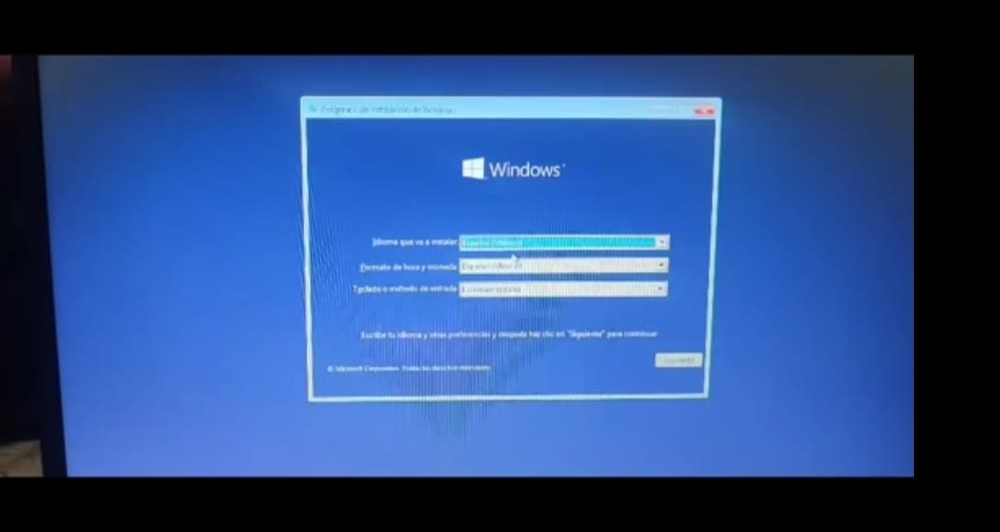

Trabajos Realizados

Mantenimiento Preventivo
Limpieza interna, eliminación de polvo, cambio de pasta térmica y revisión del sistema de refrigeración.

Reparación de Equipos
Diagnóstico de fallas, reparación de hardware y solución de problemas del sistema.

Actualización con SSD
Mejora de velocidad mediante instalación y configuración de almacenamiento SSD.

Instalación de Sistema
Configuración de Windows, programas, controladores y optimización.
Nuestro Proceso de Trabajo
1. Diagnóstico
Realizamos una revisión completa del equipo para encontrar la causa del problema.
2. Evaluación
Explicamos la falla encontrada y recomendamos la mejor solución para el equipo.
3. Reparación
Ejecutamos el mantenimiento o reparación utilizando herramientas adecuadas.
4. Entrega
Entregamos el equipo probado y funcionando, con recomendaciones para su cuidado.
Opiniones de Clientes
"Excelente atención, realizaron mantenimiento a mi computadora y mejoró mucho su velocidad."
Cliente particular
"Buen diagnóstico y trabajo profesional. Explicaron claramente el problema del equipo."
Cliente particular
"La instalación del SSD dejó mi computadora mucho más rápida. Muy recomendado."
Cliente particular
¿Tu computadora está lenta?
Realizamos mantenimiento, limpieza y optimización para mejorar el rendimiento de tu equipo.
💻 Computadoras lentas
🛡️ Virus y errores del sistema
⚡ Equipos con bajo rendimiento
💾 Mejoras con SSD
Información del Servicio
📍 Ubicación
Atención técnica personalizada para clientes particulares, hogares y pequeños negocios.
🕒 Horario de Atención
Lunes a sábado
Atención mediante WhatsApp previa coordinación.
💻 Servicios
Mantenimiento, reparación, optimización, instalación de sistemas y actualización de equipos.
Solicita tu diagnóstico
Envíanos un mensaje indicando el problema de tu computadora y te ayudaremos.
Contactar ahoraContacto
Servicio Técnico PC
¿Necesitas reparar o mejorar tu computadora? Contáctanos para recibir atención personalizada.
📱 WhatsApp: 0987586172
Enviar mensaje por WhatsApp
🔧 Reparación
💻 Mantenimiento
⚡ Optimización
🛡️ Seguridad informática